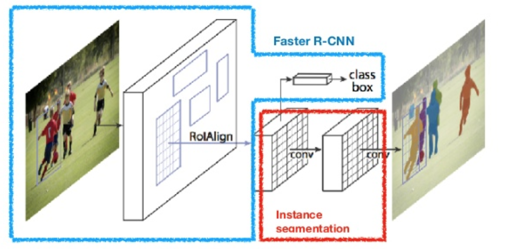

Mask R-CNN
Mask R-CNN (He et al., 2017) extends Faster R-CNN to pixel-level image segmentation. The key point is to decouple the classification and the pixel-level mask prediction tasks. Based on the framework of Faster R-CNN, it added a third branch for predicting an object mask in parallel with the existing branches for classification and localization. The mask branch is a small fully-connected network applied to each RoI, predicting a segmentation mask in a pixel-to-pixel manner.

Because pixel-level segmentation requires much more fine-grained alignment than bounding boxes, mask R-CNN improves the RoI pooling layer (named "RoIAlign layer") so that RoI can be better and more precisely mapped to the regions of the original image.
RoIAlign
The RoIAlign layer is designed to fix the location misalignment caused by quantization in the RoI pooling. RoIAlign removes the hash quantization, for example, by using x/16 instead of [x/16], so that the extracted features can be properly aligned with the input pixels. Bilinear interpolation is used for computing the floating-point location values in the input.
Loss Function
The multi-task loss function of Mask R-CNN combines the loss of classification, localization and segmentation mask: , where and are same as in Faster R-CNN.
The mask branch generates a mask of dimension m x m for each RoI and each class; K classes in total. Thus, the total output is of size . Because the model is trying to learn a mask for each class, there is no competition among classes for generating masks.
is defined as the average binary cross-entropy loss, only including k-th mask if the region is associated with the ground truth class k.
where is the label of a cell (i, j) in the true mask for the region of size m x m; is the predicted value of the same cell in the mask learned for the ground-truth class k.